Over the next two blog posts, I will be looking at everyone’s favourite* boardgame Monopoly!
The first part will be about creating and building a simulation of the game
The second will be looking at the properties themselves and ask questions like: What the best properties to buy are? Which property gives the best ROI? which sets should you own? what combination of houses and hotels are best? Does the number of players have an affect? and many more.
The game is a classic pastime for many people - long drawn-out games, getting upset at losing money, and getting into fights with friends and family. Despite not many people liking it, it’s one of the most played and famous board games out there.
If you are unfamiliar the game, you can click this link to the get the Wikipedia entry of the game and it’s rules. From now on, I will assume that you are familiar with the rules.
Here I load tidyverse for graphs and data manipulation, and a few ggplot helper functions
library(tidyverse)
library(patchwork)
library(gganimate)
options(kableExtra.html.bsTable = TRUE)monopoly_props <- readxl::read_xlsx(here::here("static/data/monpoly_properties.xlsx"))
board_space = c(0:39)
names(board_space) <- monopoly_props$Name
color_codes <- c("None"="grey40",
"Brown" = "#946C6B",
"Station"="#AEC7D8",# "#E3E4E5",
"Light Blue"= "#79D7D8",
"Pink" ="#ED63DF",# "#E51AD0",
"Utilities" = "#4CB45C",# "#7FCA8B",
"Orange" = "#E4901B",
"Red"="#E71A18",
"Yellow" = "#FFDC00",
"Green" = "#097F09",
"Dark Blue" = "#1F4AE0"
)# ggplot helper function
gg_monopoly <- function(n_games,n_rolls,add_base=FALSE) {
sim_result <- simulate_monopoly(n_games,n_rolls)
p <- monopoly_props %>%
bind_cols(pct = sim_result ) %>%
ggplot(aes(y= reorder(Name,-Space) ,x=pct,fill=Color ))+
geom_col(show.legend = FALSE)+
scale_fill_manual(values = color_codes)+
scale_x_continuous(expand = c(0,NA),labels = scales::percent_format(accuracy = 1) )+
labs(subtitle = glue::glue("Simulation of {format(n_rolls)} dice rolls over {n_games} games" ),
x="Chance of landing per dice roll (%)",y="")+
theme_classic()+
theme(panel.grid.major.x = element_line(),
panel.grid.minor.x = element_line(),
axis.line.x = element_line(),
axis.ticks =element_blank())
if (add_base == TRUE){
p <- p + geom_vline(xintercept = 1/40,lty=2,col="black")
}
return(p)
}
gg_monopoly_short <- function(n_games,n_rolls) {
sim_result <- simulate_monopoly(n_games,n_rolls)
p <- monopoly_props %>%
bind_cols(pct = sim_result ) %>%
ggplot(aes(y= reorder(Name,-Space) ,x=pct,fill=Color ))+
geom_col(show.legend = FALSE)+
scale_fill_manual(values = color_codes)+
scale_x_continuous(expand = c(0,NA),labels = scales::percent_format(accuracy = 1) )+
labs(x="Times landed on (%)",y="")+
ggtitle(label=paste("Simulating",n_rolls,"rolls over",n_games,"games" ))+
theme_classic()+
theme(panel.grid.major.x = element_line(),
panel.grid.minor.x = element_line(),
axis.line.x = element_line(),
axis.ticks =element_blank(),
axis.text.y = element_text(size=7),
)
return(p)
}Here is playing board:
board_space## Go Old Kent Road Community Chest 1
## 0 1 2
## Whitechapel Road Income Tax King's Cross Station
## 3 4 5
## The Angel, Islington Chance 1 Euston Road
## 6 7 8
## Pentonville Road In Jail/Just Visiting Pall Mall
## 9 10 11
## Electric Company Whitehall Northumberland Avenue
## 12 13 14
## Marylebone Station Bow Street Community Chest 2
## 15 16 17
## Marlborough Street Vine Street Free Parking
## 18 19 20
## Strand Chance 2 Fleet Street
## 21 22 23
## Trafalgar Square Fenchurch Street Station Leicester Square
## 24 25 26
## Coventry Street Water Works Piccadilly
## 27 28 29
## Go to Jail Regent Street Oxford Street
## 30 31 32
## Community Chest 3 Bond Street Liverpool Street Station
## 33 34 35
## Chance 3 Park Lane Super Tax
## 36 37 38
## Mayfair
## 39First thing to do in a game of monopoly is to roll the dice and move according to the sum of the top faces.
dice_rolls <- function(){
return(sample(1:6,2,replace = TRUE))
}
set.seed(414)
roll <- dice_rolls()
print(paste0("Rolled a ",roll[1]," and ",roll[2],". Their sum is ", roll[1]+roll[2] ))## [1] "Rolled a 3 and 5. Their sum is 8"Now we create a simple simulation of going around a board
simulate_monopoly <- function(n_games=1000,n_rolls=1000){
all_counts <- rep(0,40)
for (g in 1:n_games){
pos <- 0
counts <- rep(0,40)
for (i in 1:n_rolls){
# roll the dice
roll <- dice_rolls()
# move around the board
pos <- ( pos + roll[1]+roll[2] ) %% 40
counts[pos+1] <- counts[pos+1] + 1 # counts[] does not start from 0, hence need +1
}
all_counts <- all_counts + counts
}
all_counts <- all_counts/(n_rolls*n_games)
return(all_counts)
}We can see how the distribution changes as we increase the number of dice rolls in a game.
set.seed(414)
( gg_monopoly_short(1,1) + gg_monopoly_short(1,10) ) / ( gg_monopoly_short(1,50) + gg_monopoly_short(1,100) )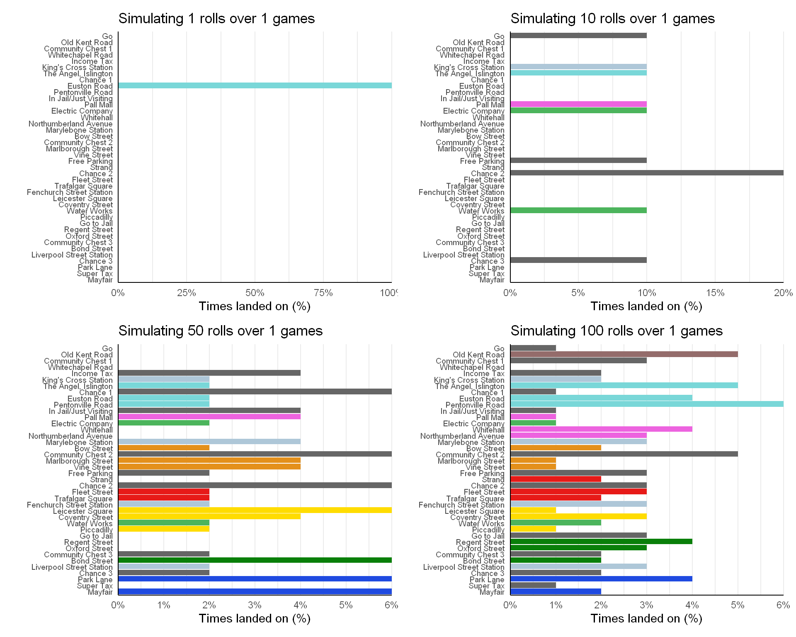
Simulating more rolls allows more squares to be landed on.
We see the chance of landing on a particular square converges to a value as we use larger and larger dice rolls.
set.seed(414)
game_1 <- simulate_monopoly(1,1000)
game_2 <- simulate_monopoly(1,5000)
game_3 <- simulate_monopoly(1,10000)
game_4 <- simulate_monopoly(1,50000)
game_5 <- simulate_monopoly(1,100000)
p <- monopoly_props %>% bind_cols( "1,000"=game_1,
"5,000"=game_2 ,
"10,000"=game_3 ,
"50,000"=game_4,
"100,000"=game_5) %>%
pivot_longer("1,000":"100,000") %>%
mutate ( name = factor(name, levels=c("1,000",
"5,000",
"10,000",
"50,000",
"100,000")
)
) %>%
#ggplot(aes(x=value,y=Name,fill=Color)) +
ggplot(aes(x=value,y=reorder(Name,-Space),fill=Color)) +
geom_col(show.legend = FALSE)+
scale_fill_manual(values = color_codes)+
scale_x_continuous(expand = c(0,NA),labels = scales::percent_format(accuracy = 1),breaks = (1/100)*seq(0,100,1) )+
#scale_y_continuous(breaks = 1:40, labels = unique(monopoly_props$Name)) +
labs(
# subtitle = glue::glue("Simulation of {format(n_rolls)} dice rolls over {n_games} games" ),
x="Chance of landing per dice roll (%)",y="")+
geom_vline(xintercept = (1/40),lty=2)+
theme_classic()+
theme(panel.grid.major.x = element_line(size = .9),
panel.grid.minor.x = element_line(size = .5),
axis.line.x = element_line(),
axis.ticks =element_blank())
anim <- p+transition_states(name)+ease_aes('sine-in-out')+
ggtitle("Simulation of {closest_state} dice rolls over 1 game")
animate(anim,fps=30)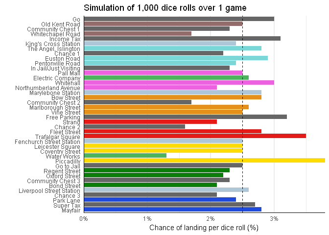
After 100,000 dice rolls we reach a the chance of landing on a square as 2.5%.
Now, if we were to increase the number of games played, we can get a view of the many different paths a player can take.
set.seed(414)
( gg_monopoly_short(1,5) + gg_monopoly_short(10,5) ) / ( gg_monopoly_short(50,5) + gg_monopoly_short(100,5) )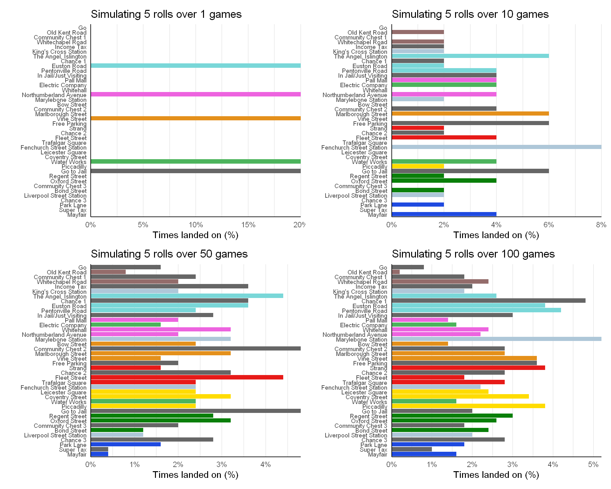
We can also simulate a large number of games. The next animation shows the chance of landing on a square for each roll in the first 10 rolls in 10,000 games.
set.seed(414)
games <- rep(NA,10)
for (i in 1:10){
temp <- simulate_monopoly(10000,i)
nam <- paste0("game_", i)
assign(nam, temp)
}
df <- monopoly_props %>% bind_cols( "1"=game_1,"2"=game_2 , "3"=game_3 ,"4"=game_4,
"5"=game_5,"6"=game_6,"7"=game_7 , "8"=game_8 ,
"9"=game_9,"10"=game_10) %>%
pivot_longer("1":"10") %>%
mutate ( name = as.numeric(name) )
p <- df %>%
ggplot(aes(x=value,y=reorder(Name,-Space),fill=Color)) +
geom_col(show.legend = FALSE)+
scale_fill_manual(values = color_codes)+
scale_x_continuous(expand = c(0,NA),labels = scales::percent_format(accuracy = 1),breaks = (1/100)*seq(0,100,5) )+
labs(x="Chance of landing per dice roll (%)",y="")+
geom_vline(xintercept = (1/40),lty=2)+
theme_classic()+
theme(panel.grid.major.x = element_line(size = .9),
panel.grid.minor.x = element_line(size = .5),
axis.line.x = element_line(),
axis.ticks =element_blank())
anim <- p+transition_states(name)+ ease_aes('sine-in-out')+
ggtitle("Simulation of the first {closest_state} dice rolls over 10,000 games",
subtitle = "Most likely place to land: { df %>% filter(name==closest_state) %>% slice_max(order_by = value) %>% select(Name) %>% pull() }")
animate(anim,fps=30,nframes = 300)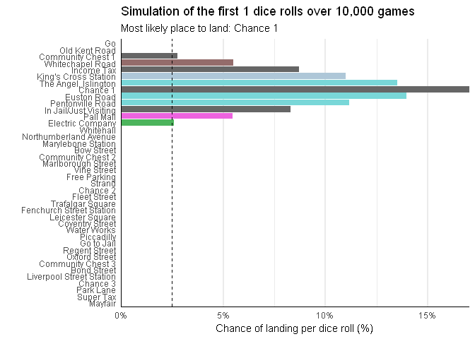
After one dice roll, the probabilities of landing on a square are normally distributed with the mean being seven places away from go - the chance square. This is because rolling a seven is the most likeliest outcome.
After more dice rolls the probabilities start to spread themselves out across the board. This shows the many paths a player can take after just several rolls.
If we were to simulate a large number of rolls over a large number of games, we can get the long term behaviour as shown below.
Now we see that basically speaking, the chances of landing on any square in the long run is equal for all spaces. This should not be too surprising as there is a 1-in-40 chance of landing on any given square.
set.seed(414)
gg_monopoly(1e3,1e3,add_base = TRUE)+
scale_x_continuous(expand = c(0,NA),labels = scales::percent_format(accuracy = 0.1 ),breaks = (1/100)*seq(0,100,0.5) )+
labs(title="Long term behaviour of going around the board")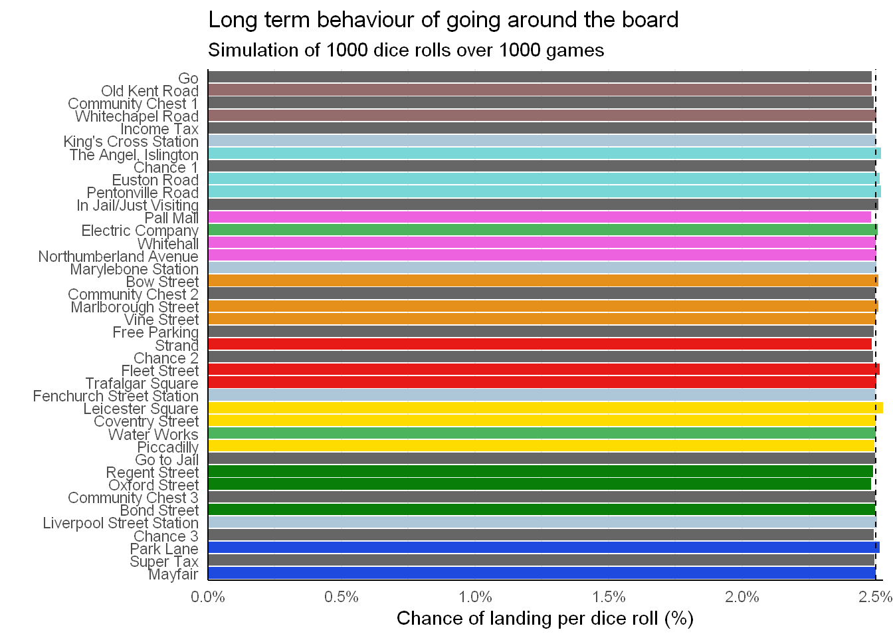
Note the dashed line at 2.5%, this is the chance of randomly landing on a space on the board, which is \(\frac{1}{40}\).
Next we add the condition of going to jail if one lands on the “Go to jail” space.
simulate_monopoly <- function(n_games=1000,n_rolls=1000){
all_counts <- rep(0,40)
for (g in 1:n_games){
pos <- 0
counts <- rep(0,40)
for (i in 1:n_rolls){
roll <- dice_rolls()
pos <- ( pos + roll[1]+roll[2] ) %% 40
# If land on go to jail - go to jail
if (pos == 30){
pos = 10
}
counts[pos+1] <- counts[pos+1] + 1
}
all_counts <- all_counts + counts
}
all_counts <- all_counts/(n_rolls*n_games)
return(all_counts)
}set.seed(414)
gg_monopoly(1e3,1e3,add_base = TRUE)+
labs(title="Adding go to jail")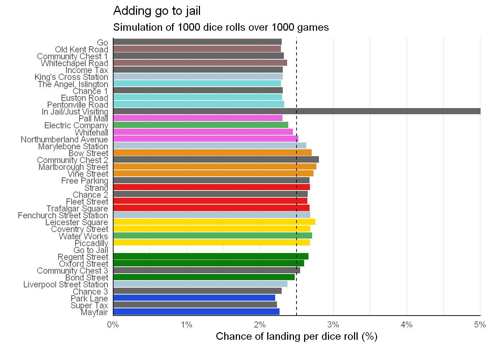
On viewing the graph, there is a noticeable increase in the chance of ending a turn in jail. The spaces ahead of jail also see a slight increase, while all the other places see a dip
Next, we add the doubles rule of re-rolling if a player rolls a double, but if a player rolls 3 doubles in a row, then they get sent to jail.
simulate_monopoly <- function(n_games=1000,n_rolls=1000){
all_counts <- rep(0,40)
for (g in 1:n_games){
pos <- 0
counts <- rep(0,40)
n_doubles <- 0
for (i in 1:n_rolls){
roll <- dice_rolls()
# if double then n_double += 1
# else n_doubles = 0
if (roll[1] == roll[2] ) { n_doubles <- n_doubles + 1}
else {n_doubles = 0}
pos <- ( pos + roll[1]+roll[2] ) %% 40
# If landed on Go-to-Jail or n_doubles == 3
if (pos == 30 || n_doubles == 3 ){
pos = 10 # go jail & reset n_double
n_doubles = 0
}
counts[pos+1] <- counts[pos+1] + 1
}
all_counts <- all_counts + counts
}
all_counts <- all_counts/(n_rolls*n_games)
return(all_counts)
}set.seed(414)
gg_monopoly(1e3,1e3,add_base = TRUE)+
labs(title="Adding doubles rule")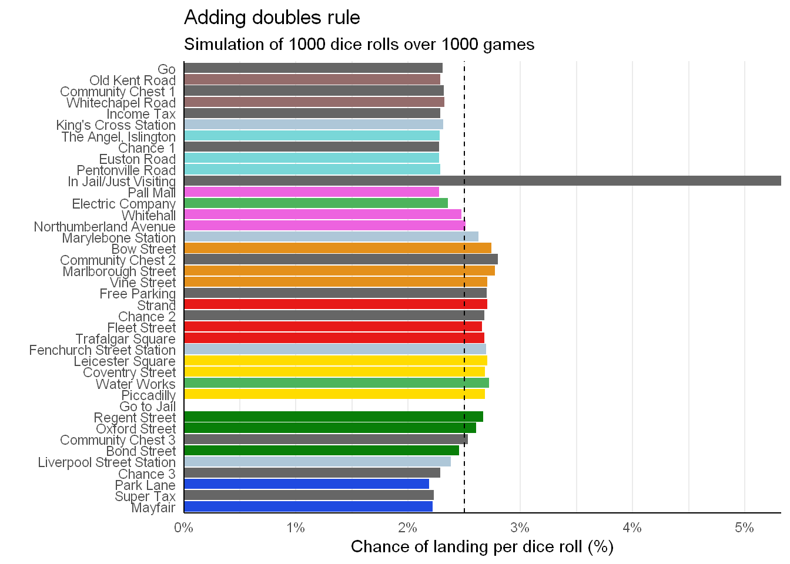
By adding the doubles rule, the chances of going to jail per dice roll increase from under 5% to around 5.5%.
Now we add the affects of drawing cards from the chance or community chest places
Here I will use the assumption from this site about the chance cards distribution.
Namely, of the 16 chance cards, there are 10 that move a player, and two of those are going to the nearest station
# Function for drawing chance cards
draw_chance_card <- function(pos){
jailed <- FALSE
cards <- c("Kings","Jail","Backwards","Trafalgar",
"Pall","Mayfair","Go","Utility",
"Station","Station", "None","None",
"None","None","None","None"
)
drawn <- sample(cards,1)
if (drawn =="None"){pos=pos} # If none then do nothing
else if (drawn == "Kings"){pos=5 }
else if (drawn == "Jail"){pos=10 ;jailed=TRUE }
else if (drawn == "Backwards"){pos= pos-3 }
else if (drawn == "Trafalgar") {pos = 24}
else if (drawn == "Pall") {pos = 11}
else if (drawn == "Mayfair") {pos=39}
else if (drawn == "Go"){pos=0}
else if (drawn == "Utility"){ # Go to nearest utility
while (!pos %in% c(12,28))
{pos = ( pos + 1 ) %% 40}
}
else if(drawn == "Station"){ # Go to nearest station
while (!pos %in% c(5,15,25,35) )
{pos = ( pos + 1 ) %% 40}
}
return( list(pos,jailed) )
}Likewise with chance cards, I will use the assumption from the same site about the community chest card distribution.
Namely, of the cards, only two move a player.
draw_chest_card <- function(pos){
jailed <- FALSE
cards <- c("Go","Jail","None","None",
"None","None","None","None",
"None","None","None","None",
"None","None","None","None"
)
drawn <- sample(cards,1)
if (drawn == "None"){pos = pos} # If none then do nothing
else if (drawn == "Jail"){pos=10; jailed=TRUE}
else if (drawn == "Go"){pos=0}
return(list(pos,jailed) )
}There may be slight differences depending on region or edition. Any differences in the cards will result in changes in the short-term and long-term behaviour of going around a board.
simulate_monopoly <- function(n_games=1000,n_rolls=1000){
all_counts <- rep(0,40)
for (g in 1:n_games){
pos <- 0
jailed <- FALSE
counts <- rep(0,40)
n_doubles <- 0
for (i in 1:n_rolls){
roll <- dice_rolls()
if (roll[1] == roll[2] ) { n_doubles <- n_doubles + 1}
else {n_doubles = 0}
pos <- ( pos + roll[1]+roll[2] ) %% 40
if (pos == 30 || n_doubles == 3 ){
pos = 10
n_doubles = 0
}
#### Card actions
## land on chance
if (pos %in% c(7,22,36) ){
card_res = draw_chance_card(pos)
pos = card_res[[1]]
jailed = card_res[[2]]
}
## land on community chest
else if (pos %in% c(2,17,33) ){
card_res = draw_chest_card(pos)
pos = card_res[[1]]
jailed = card_res[[2]]
}
counts[pos+1] <- counts[pos+1] + 1
}
all_counts <- all_counts + counts
}
all_counts <- all_counts/(n_rolls*n_games)
return(all_counts)
}As seen previously, we can simulate the first 10 rolls over many games.
set.seed(414)
games <- rep(NA,10)
for (i in 1:10){
temp <- simulate_monopoly(10000,i)
nam <- paste0("game_", i)
assign(nam, temp)
}
df <- monopoly_props %>% bind_cols( "1"=game_1,"2"=game_2 , "3"=game_3 ,"4"=game_4,"5"=game_5,
"6"=game_6,"7"=game_7 , "8"=game_8 ,"9"=game_9,"10"=game_10) %>%
pivot_longer("1":"10") %>%
mutate ( name = as.numeric(name) )
p <- df %>%
ggplot(aes(x=value,y=reorder(Name,-Space),fill=Color)) +
geom_col(show.legend = FALSE)+
scale_fill_manual(values = color_codes)+
scale_x_continuous(expand = c(0,NA),labels = scales::percent_format(accuracy = 1),breaks = (1/100)*seq(0,100,5) )+
labs(x="Chance of ending on square per dice roll (%)",y="")+
geom_vline(xintercept = (1/40),lty=2)+
theme_classic()+
theme(panel.grid.major.x = element_line(size = .9),
panel.grid.minor.x = element_line(size = .5),
axis.line.x = element_line(),
axis.ticks =element_blank())
anim <- p+transition_states(name)+ #ease_aes('sine-in-out')+
ggtitle("Simulation of the first {closest_state} dice rolls over 10,000 games",
subtitle = "Most likely square to end on: {cities <- df %>% filter(name==closest_state) %>% slice_max(order_by = value,n=1) %>% select(Name) %>% pull() }")
animate(anim,fps=30,nframes = 300)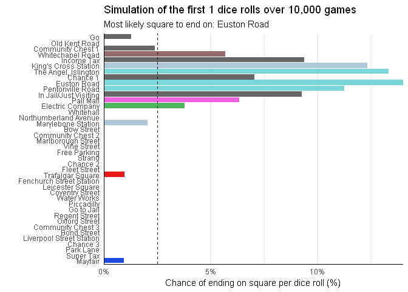
Notice that after only a few rolls, landing in jail becomes the likeliest place to end up on after a given dice roll.
The interpretation for the probabilities is now slightly more nuanced. Instead of referring the chance of landing per dice rolls, it now refers to the chance of ending up on a square after each dice roll per dice roll.
The difference is due to the changes induced by card actions or going to jail by gaining doubles. The simulation only records the final position after a dice roll.
set.seed(414)
gg_monopoly(1e3,1e3,add_base = TRUE)+
labs(title="Adding chance cards and community chest actions",
x="Chance of ending on square per dice roll (%)",y="")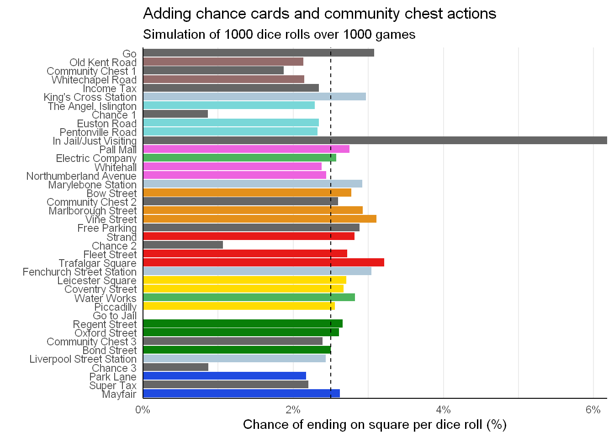
Going to jail now has about a 6% chance of happening per turn. The addition of chance cards has also altered the distribution of landing on any space, for example Trafalgar Square has the highest chance of being landed for any property.
The stations also a receive a large boost.
n_games <- 1e3
n_rolls <- 1e3
set.seed(414)
sim_res <- simulate_monopoly(n_games,n_rolls)
monopoly_props %>%
bind_cols(pct = sim_res) %>%
filter(Name != "Go to Jail" ) %>%
ggplot(aes(x=pct,y=reorder(Name,pct),fill=Color ))+
geom_col(show.legend = FALSE)+
scale_fill_manual(values = color_codes)+
scale_x_continuous(expand = c(0,NA),labels = scales::percent_format(accuracy = 1),breaks = (1/100)*seq(0,100,1) )+
labs(title = "Trafalgar Square, Vine Street, and most stations are the properties\nthat have the highest chance of being landed on",
subtitle = glue::glue("Simulation of {format(n_rolls)} dice rolls over {n_games} games" ),
x="Chance of ending on square per dice roll (%)",y="")+
theme_classic()+
theme(panel.grid.major.x = element_line(size = .9),
panel.grid.minor.x = element_line(size = .5),
axis.line.x = element_line(),
axis.ticks =element_blank())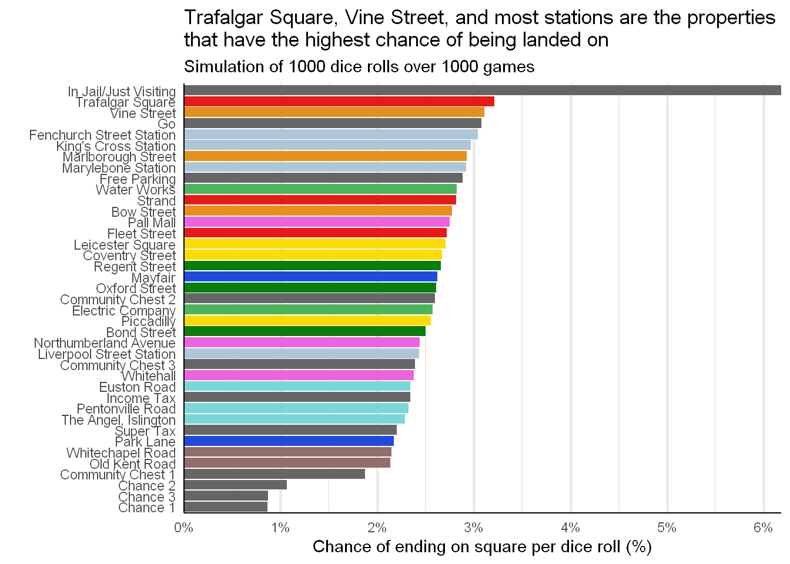
The most likeliest purchasable properties are Trafalgar Square, followed by Vine Street, and several stations.
The least likeliest are: Old Kent Road, Whitechapel Road, and Park Lane.
It is apparent that there are two strategies to consider when in jail.
The first is leaving jail as soon as possible
The second is staying in jail as long as possible
They come about because initially, when the board is empty and there are many properties up for grabs, a player would want to land on those squares are purchase that property, and they would not be able to do that when in jail
But when there are many properties owned by other places and some of those properties has houses or hotels placed on them, it can be very damaging to a players cash pile and cause a ruin. Thus staying in jail to collect rent from your opponents while also buying time to avoid landing on potential game-ending squares.
We will adjust the simulator to take into account both strategies.
simulate_monopoly <- function(n_games = 1000, n_rolls = 1000,jail_stay = TRUE){
all_counts = rep(0,40)
for (g in 1:n_games){
pos = 0
n_doubles = 0
jailed = FALSE
jail_turns = 0
counts = rep(0,40)
for (i in 1:n_rolls){
roll <- dice_rolls()
##### stay in jail strategy
if (jail_stay ){
# Checks for doubles or jail
if ( (roll[1] == roll[2]) & !jailed) # if doubles and not in jail
{ n_doubles = n_doubles + 1
# print("NOT IN jail - doubles")
}
else if ( (roll[1] != roll[2]) & jailed & jail_turns !=3) # if not doubles and in jail
{ jail_turns = jail_turns + 1
roll = c(0,0)
# print("IN jail - NO doubles")
# print(paste("In jail for:",jail_turns))
}
else if ( ( (roll[1] == roll[2]) & jailed) | jail_turns == 3 ) # if doubles and in jail, or spent 3 turns in jail
{n_doubles = 0
jail_turns = 0
jailed = FALSE
# print("IN jail - DOUBLES")
}
else {n_doubles = 0
# print("NOT IN jail - NO doubles")
} # if not doubles and not in jail
}
#### leave jail strategy
else if (!jail_stay){
if (roll[1] == roll[2] ) { n_doubles = n_doubles + 1}
else {n_doubles = 0}
}
# move to new position
pos <- ( pos + roll[1]+roll[2] ) %% 40
# If landed on Go-to-Jail or got 3 doubles
if (pos == 30 || n_doubles == 3 ){ # go jail and reset doubles
pos = 10
n_doubles = 0
jailed = TRUE
}
#### Card actions
## land on chance
if (pos %in% c(7,22,36) ){
card_res = draw_chance_card(pos)
pos = card_res[[1]]
jailed = card_res[[2]]
}
## land on community chest
else if (pos %in% c(2,17,33) ){
card_res = draw_chest_card(pos)
pos = card_res[[1]]
jailed = card_res[[2]]
}
counts[pos+1] <- counts[pos+1] + 1
}
all_counts <- all_counts + counts
}
all_counts <- all_counts/(n_rolls*n_games)
return(all_counts)
}The simulation now takes into the two strategies - leaving jail asap, or staying as long as possible.
We can see how the strategies result in different probabilities for ending on a particular square in the long term.
n_games <- 1e2 ; n_rolls <- 1e3
set.seed(414)
game_1 <- simulate_monopoly(n_games, n_rolls ,jail_stay = FALSE)
set.seed(414)
game_2 <- simulate_monopoly(n_games, n_rolls , jail_stay = TRUE)p <- monopoly_props %>%
bind_cols(Leave_jail = game_1, Stay_jail = game_2 ) %>%
rename( "Leave jail" = Leave_jail,
"Stay in jail" = Stay_jail) %>%
pivot_longer(cols=c("Leave jail","Stay in jail")) %>%
ggplot(aes(x=value,y=reorder(Name,-Space ),fill=Color)) +
geom_col(show.legend = FALSE)+
scale_fill_manual(values = color_codes)+
scale_x_continuous(expand = c(0,NA),labels = scales::percent_format(accuracy = 1),breaks = (1/100)*seq(0,100,2) )+
labs(
subtitle = glue::glue("Simulation of {format(n_rolls)} dice rolls over {n_games} games" ),
x="Chance of ending on square per dice roll (%)",y="")+
theme_classic()+
theme(panel.grid.major.x = element_line(size = .9),
panel.grid.minor.x = element_line(size = .5),
axis.line.x = element_line(),
axis.ticks =element_blank())
anim <- p + transition_states(name) + ease_aes('sine-in-out') +
ggtitle('Strategy: {closest_state}')
animate(anim,fps=30)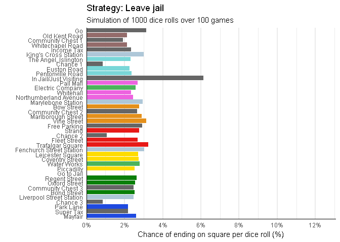
Up to now all the simulations took the jail strategy as leaving instantly, but when we compare the long term probabilities, we see that the chance of ending up in jail is even more dominant than the previous strategy of leaving.
This large increase for ending up in jail suppresses the probabilities for ending a dice roll on other squares.
The problem with these simulations is that it assumes that games of monopoly will take a sufficiently long enough time to reach the steady states discussed previously.
The average number of dice rolls per player in a game of monopoly is about 30 dice rolls1. So using this fact, I will simulate a game with 30 dice rolls. Though there have been estimates ranging from 30-45 rolls.
Since supposedly most games end after 30 dice rolls, then using this number in our simulation should give us accurate results that correspond to what happens in a real game. However, in the event that a game goes on for longer than 30 dice rolls per player, I will also long at the long term limit of dice rolls and also study those scenarios.
So overall I will look at four possible situations; the chance of landing on a square after:
many dice rolls, leaving jail
many dice rolls, stay in jail
30 dice rolls, leaving jail
30 dices rolls, stay in jail
set.seed(414)
leave_long <- simulate_monopoly(n_games = 1e4,n_rolls =1e3 ,jail_stay = FALSE)
set.seed(414)
stay_long<- simulate_monopoly(n_games = 1e4,n_rolls =1e3 ,jail_stay = TRUE)
set.seed(414)
leave_30 <- simulate_monopoly(n_games =1e5,n_rolls = 30,jail_stay = FALSE)
set.seed(414)
stay_30 <- simulate_monopoly(n_games =1e5,n_rolls = 30,jail_stay = TRUE)We can view the relative percentage difference between the two dice roll situations. This asks the question, what squares are more likely to be landed on than others for the different scenarios?
First up we look at the difference of leaving jail after 30 dice rolls to leaving jail after many rolls.
monopoly_props %>%
mutate ( pct = (leave_30 -leave_long)/leave_long ) %>%
ggplot(aes(x=pct,y=reorder(Name,-Space),fill=Color ))+
geom_col(show.legend = FALSE)+
scale_fill_manual(values = color_codes)+
scale_x_continuous(labels = scales::percent_format(accuracy = 1),breaks = seq(-1,1,0.02))+
labs(title = "The chances of ending on a light blue, pink or orange are higher\nafter 30 dice rolls than many dice rolls",
subtitle = "Relative percentage difference of ending on a square \n from 30 dice rolls to many dice rolls for leaving jail",
x="Relative percentage difference (%)",y="")+
theme_classic()+
theme(panel.grid.major.x = element_line(size = .9),
panel.grid.minor.x = element_line(size = .5),
axis.line.x = element_line(),
axis.ticks =element_blank())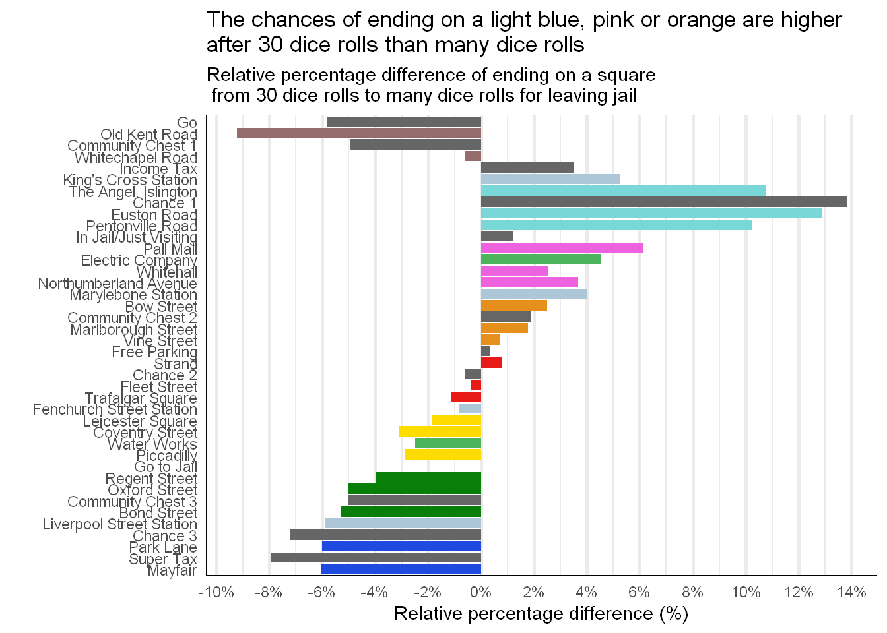
The above graph shows that when using simulating for 30 dice rolls instead of many, there is an big increase in squares that are in the first 5-20 squares than in all the other squares. In particular, the light blue and pinks see a very large percentage increase in the chances of landing on that square.
Likewise we can see the difference for the stay in jail strategy.
monopoly_props %>%
mutate ( pct = (stay_30 -stay_long)/stay_long ) %>%
ggplot(aes(x=pct,y=reorder(Name,-Space),fill=Color ))+
geom_col(show.legend = FALSE)+
scale_fill_manual(values = color_codes)+
scale_x_continuous(labels = scales::percent_format(accuracy = 1),breaks = seq(-1,1,0.02))+
labs(title = "The chances of ending on a light blue, pink or orange are higher\nafter 30 dice rolls than many dice rolls",
subtitle = "Relative percentage difference of ending on a square \n from 30 dice rolls to many dice rolls for staying in jail",
x="Relative percentage difference (%)",y="")+
theme_classic()+
theme(panel.grid.major.x = element_line(size = .9),
panel.grid.minor.x = element_line(size = .5),
axis.line.x = element_line(),
axis.ticks =element_blank())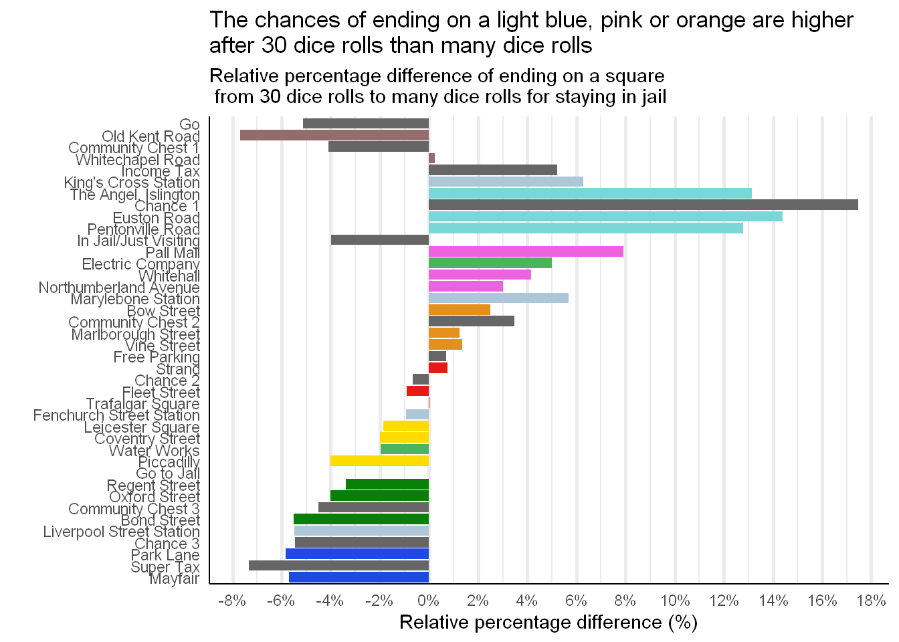
We see a similar situation to the leaving jail scenario, however, the big difference is that the simulation results suggest that there is a 4% decrease in the change of staying in after 30 dice rolls than going to jail after many dice rolls.
Here are the graphs for the various results. First for many dice rolls
p1 <- monopoly_props %>%
mutate ( pct = leave_long ) %>%
ggplot(aes(x=pct,y=reorder(Name,-Space),fill=Color ))+
geom_col(show.legend = FALSE)+
geom_text(aes(label= paste(round(pct*100,1),"%"),x=pct ),size=3,hjust=-.1 )+
scale_fill_manual(values = color_codes)+
scale_x_continuous(expand=c(0,NA), labels = scales::percent_format(accuracy = 1),breaks = seq(-1,1,0.02),limits = c(0,0.08) )+
labs(title = "Leave jail",y="",
x="Chance of ending on square per dice roll (%)")+
theme_classic()+
theme(panel.grid.major.x = element_line(size = .9),
panel.grid.minor.x = element_line(size = .5),
axis.line.x = element_line(),
axis.ticks =element_blank())
p2 <- monopoly_props %>%
mutate ( pct = stay_long ) %>%
ggplot(aes(x=pct,y=reorder(Name,-Space),fill=Color ))+
geom_col(show.legend = FALSE)+
geom_text(aes(label= paste(round(pct*100,1),"%"),x=pct ),size=3,hjust=-.1 )+
scale_fill_manual(values = color_codes)+
scale_x_continuous(expand=c(0,NA), labels = scales::percent_format(accuracy = 1),breaks = seq(-1,1,0.02),limits = c(0,0.15) )+
labs(title = "Stay in Jail",y="",
x="Chance of ending on square per dice roll (%)")+
theme_classic()+
theme(panel.grid.major.x = element_line(size = .9),
panel.grid.minor.x = element_line(size = .5),
axis.line.x = element_line(),
axis.ticks =element_blank())
p1 + p2 + patchwork::plot_annotation(title = "Chance of ending on a square for many dice rolls",subtitle ="Simulation of 1,000 dice rolls over 10,000 games" )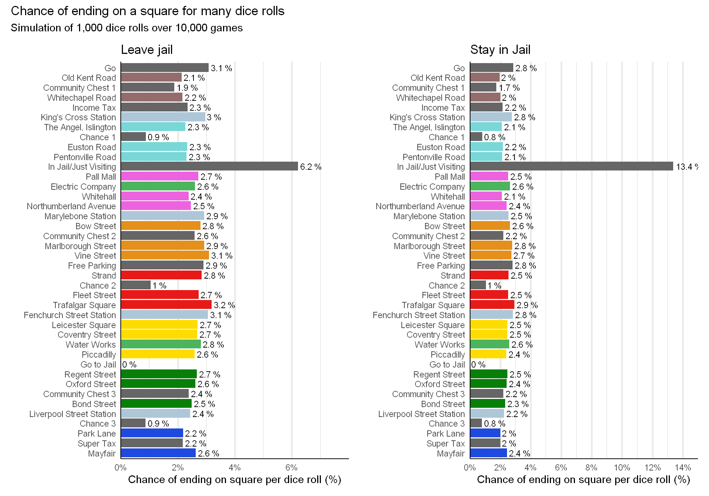
The second is the scenario after 30 dice rolls.
p1 <- monopoly_props %>%
mutate ( pct = leave_30 ) %>%
ggplot(aes(x=pct,y=reorder(Name,-Space),fill=Color ))+
geom_col(show.legend = FALSE)+
geom_text(aes(label= paste(round(pct*100,1),"%"),x=pct ),size=3,hjust=-.1 )+
scale_fill_manual(values = color_codes)+
scale_x_continuous(expand=c(0,NA), labels = scales::percent_format(accuracy = 1),breaks = seq(-1,1,0.02),limits = c(0,0.08) )+
labs(title = "Leave jail",y="",
x="Chance of ending on square per dice roll (%)")+
theme_classic()+
theme(panel.grid.major.x = element_line(size = .9),
panel.grid.minor.x = element_line(size = .5),
axis.line.x = element_line(),
axis.ticks =element_blank())
p2 <- monopoly_props %>%
mutate ( pct = stay_30 ) %>%
ggplot(aes(x=pct,y=reorder(Name,-Space),fill=Color ))+
geom_col(show.legend = FALSE)+
geom_text(aes(label= paste(round(pct*100,1),"%"),x=pct ),size=3,hjust=-.1 )+
scale_fill_manual(values = color_codes)+
scale_x_continuous(expand=c(0,NA), labels = scales::percent_format(accuracy = 1),breaks = seq(-1,1,0.02),limits = c(0,0.15) )+
labs(title = "Stay in Jail",y="",
x="Chance of ending on square per dice roll (%)")+
theme_classic()+
theme(panel.grid.major.x = element_line(size = .9),
panel.grid.minor.x = element_line(size = .5),
axis.line.x = element_line(),
axis.ticks =element_blank())
p1 + p2 + patchwork::plot_annotation(title = "Chance of ending on a square after 30 dice rolls",subtitle ="Simulation of 30 dice rolls over 100,000 games" )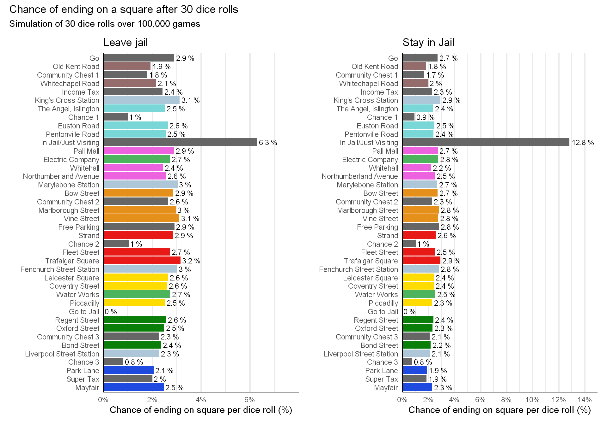
Finally, before we finish we can view a table of results for the probabilities of landing on a particular square.
For many dice rolls, n_games = 10^4 and n_rolls = 10^3
For 30 dice rolls, n_games = 10^5 and n_rolls = 30
monopoly_props %>%
select(Space,Color,Name) %>%
mutate( "long_leave" = leave_long,
"long_stay" = stay_long,
"30_leave" =leave_30,
"30_stay" = stay_30) %>%
mutate( across( "long_leave":"30_stay" , ~ scales::percent(.x,accuracy = 0.01) )) %>%
kableExtra::kable(col.names = c("Space","Group","Name","Leave Jail","Stay Jail","Leave Jail","Stay Jail"),
align = "clrcccc") %>%
kableExtra::kable_styling(bootstrap_options = c("striped","condensed"),full_width = F) %>%
kableExtra::add_header_above(c(" " = 3, "Many rolls" = 2, "30 rolls" = 2) ) | Space | Group | Name | Leave Jail | Stay Jail | Leave Jail | Stay Jail |
|---|---|---|---|---|---|---|
| 0 | None | Go | 3.08% | 2.85% | 2.90% | 2.70% |
| 1 | Brown | Old Kent Road | 2.13% | 1.96% | 1.93% | 1.81% |
| 2 | None | Community Chest 1 | 1.88% | 1.74% | 1.79% | 1.67% |
| 3 | Brown | Whitechapel Road | 2.16% | 2.00% | 2.15% | 2.00% |
| 4 | None | Income Tax | 2.34% | 2.15% | 2.42% | 2.26% |
| 5 | Station | King’s Cross Station | 2.96% | 2.76% | 3.12% | 2.93% |
| 6 | Light Blue | The Angel, Islington | 2.27% | 2.10% | 2.51% | 2.37% |
| 7 | None | Chance 1 | 0.87% | 0.80% | 0.99% | 0.94% |
| 8 | Light Blue | Euston Road | 2.33% | 2.16% | 2.64% | 2.48% |
| 9 | Light Blue | Pentonville Road | 2.31% | 2.13% | 2.54% | 2.40% |
| 10 | None | In Jail/Just Visiting | 6.22% | 13.37% | 6.30% | 12.84% |
| 11 | Pink | Pall Mall | 2.72% | 2.52% | 2.88% | 2.72% |
| 12 | Utilities | Electric Company | 2.60% | 2.63% | 2.72% | 2.76% |
| 13 | Pink | Whitehall | 2.38% | 2.10% | 2.44% | 2.19% |
| 14 | Pink | Northumberland Avenue | 2.46% | 2.41% | 2.55% | 2.49% |
| 15 | Station | Marylebone Station | 2.93% | 2.54% | 3.05% | 2.69% |
| 16 | Orange | Bow Street | 2.79% | 2.64% | 2.86% | 2.71% |
| 17 | None | Community Chest 2 | 2.59% | 2.19% | 2.64% | 2.26% |
| 18 | Orange | Marlborough Street | 2.93% | 2.78% | 2.98% | 2.81% |
| 19 | Orange | Vine Street | 3.09% | 2.72% | 3.11% | 2.76% |
| 20 | None | Free Parking | 2.90% | 2.80% | 2.91% | 2.82% |
| 21 | Red | Strand | 2.83% | 2.54% | 2.85% | 2.56% |
| 22 | None | Chance 2 | 1.05% | 1.04% | 1.04% | 1.04% |
| 23 | Red | Fleet Street | 2.73% | 2.52% | 2.72% | 2.50% |
| 24 | Red | Trafalgar Square | 3.19% | 2.93% | 3.15% | 2.93% |
| 25 | Station | Fenchurch Street Station | 3.05% | 2.83% | 3.03% | 2.80% |
| 26 | Yellow | Leicester Square | 2.70% | 2.47% | 2.65% | 2.43% |
| 27 | Yellow | Coventry Street | 2.68% | 2.46% | 2.60% | 2.41% |
| 28 | Utilities | Water Works | 2.80% | 2.60% | 2.73% | 2.54% |
| 29 | Yellow | Piccadilly | 2.59% | 2.39% | 2.51% | 2.29% |
| 30 | None | Go to Jail | 0.00% | 0.00% | 0.00% | 0.00% |
| 31 | Green | Regent Street | 2.67% | 2.47% | 2.56% | 2.38% |
| 32 | Green | Oxford Street | 2.62% | 2.42% | 2.49% | 2.32% |
| 33 | None | Community Chest 3 | 2.39% | 2.19% | 2.27% | 2.09% |
| 34 | Green | Bond Street | 2.49% | 2.31% | 2.36% | 2.18% |
| 35 | Station | Liverpool Street Station | 2.43% | 2.24% | 2.29% | 2.12% |
| 36 | None | Chance 3 | 0.86% | 0.80% | 0.80% | 0.75% |
| 37 | Dark Blue | Park Lane | 2.18% | 2.01% | 2.05% | 1.89% |
| 38 | None | Super Tax | 2.18% | 2.01% | 2.00% | 1.86% |
| 39 | Dark Blue | Mayfair | 2.63% | 2.43% | 2.47% | 2.29% |
We have seen how to build a simulator from a basic idea of a player going round a board to then introducing more and more of the game’s mechanics to add further complexity and similarity to a real world game of monopoly. Some of the code for the simulator was inspired by Matt Parker’s Monopoly code2, but that was built in Python, while this is in R.
Overall, we see that ending up in jail is the most likely space to end a dice roll on. The exact probability depends on the strategy and number of dice rolls played.
The most likeliest purchasable properties to end a dice roll on are: Trafalgar Square, Vine Street, and several stations.
The least likeliest are: Old Kent Road, Whitechapel Road, and Park Lane.
In the next blogpost, I will look at the fun part! In particular I will look at the properties and deciding which are the best based on a number of factors like which properties give the best ROI? which can produce the fastest returns? which are the best combinations of houses and hotels? Does the best property chance depending on the number of players?
All that coming up!
sessionInfo()## R version 4.0.3 (2020-10-10)
## Platform: x86_64-w64-mingw32/x64 (64-bit)
## Running under: Windows 10 x64 (build 19041)
##
## Matrix products: default
##
## locale:
## [1] LC_COLLATE=English_United Kingdom.1252
## [2] LC_CTYPE=English_United Kingdom.1252
## [3] LC_MONETARY=English_United Kingdom.1252
## [4] LC_NUMERIC=C
## [5] LC_TIME=English_United Kingdom.1252
##
## attached base packages:
## [1] stats graphics grDevices utils datasets methods base
##
## other attached packages:
## [1] gganimate_1.0.7 patchwork_1.1.1 forcats_0.5.0 stringr_1.4.0
## [5] dplyr_1.0.2 purrr_0.3.4 readr_1.4.0 tidyr_1.1.2
## [9] tibble_3.0.3 ggplot2_3.3.2 tidyverse_1.3.0
##
## loaded via a namespace (and not attached):
## [1] Rcpp_1.0.5 lubridate_1.7.9 here_1.0.1 prettyunits_1.1.1
## [5] ps_1.4.0 assertthat_0.2.1 rprojroot_2.0.2 digest_0.6.25
## [9] R6_2.4.1 cellranger_1.1.0 plyr_1.8.6 backports_1.1.10
## [13] reprex_0.3.0 evaluate_0.14 highr_0.8 httr_1.4.2
## [17] blogdown_0.21 pillar_1.4.6 rlang_0.4.7 progress_1.2.2
## [21] readxl_1.3.1 rstudioapi_0.11 gifski_0.8.6 blob_1.2.1
## [25] rmarkdown_2.5 labeling_0.4.2 webshot_0.5.2 munsell_0.5.0
## [29] broom_0.7.2 compiler_4.0.3 modelr_0.1.8 xfun_0.18
## [33] pkgconfig_2.0.3 htmltools_0.5.0 tidyselect_1.1.0 bookdown_0.21
## [37] viridisLite_0.3.0 fansi_0.4.1 crayon_1.3.4 dbplyr_1.4.4
## [41] withr_2.3.0 grid_4.0.3 jsonlite_1.7.1 gtable_0.3.0
## [45] lifecycle_0.2.0 DBI_1.1.0 magrittr_1.5 scales_1.1.1
## [49] cli_2.1.0 stringi_1.5.3 farver_2.0.3 fs_1.5.0
## [53] xml2_1.3.2 ellipsis_0.3.1 generics_0.0.2 vctrs_0.3.4
## [57] kableExtra_1.3.1 tools_4.0.3 glue_1.4.2 tweenr_1.0.1
## [61] hms_0.5.3 yaml_2.2.1 colorspace_1.4-1 rvest_0.3.6
## [65] knitr_1.30 haven_2.3.1This figure came from the youtube video The Mathematics of Winning Monopoly from the
Stand-up Maths channel and a blog post by the authors of the book mentioned in said video↩︎